search
language
Experience the ultimate East African adventure with this comprehensive 15-day cross-border safari through Kenya's Masai Mara, Nakuru, Naivasha, Amboseli and Tanzania's Tarangire, Manyara, Serengeti, and Ngorongoro Crater.
Embark on the ultimate 15-day cross-border safari adventure that combines the best of Kenya and Tanzania's most iconic wildlife destinations. This comprehensive journey takes you through world-famous national parks and conservation areas, offering an unparalleled East African safari experience that will leave you with memories to last a lifetime.
Experience the raw beauty of the African wilderness as you explore Kenya's Masai Mara during the Great Migration, witness the flamingos of Lake Nakuru, adventure through Hell's Gate National Park, and photograph elephants against Mount Kilimanjaro in Amboseli. Cross into Tanzania to discover the baobab-studded landscapes of Tarangire, the tree-climbing lions of Lake Manyara, the endless plains of the Serengeti for two full days, and descend into the spectacular Ngorongoro Crater—a UNESCO World Heritage Site.
This cross-border adventure offers unique cultural experiences, including optional visits to Maasai villages and the historic Olduvai Gorge archaeological site. Each day brings new wildlife encounters, breathtaking landscapes, and opportunities to witness Africa's most iconic animals in their natural habitats.
This journey is designed for adventurous travelers seeking the most comprehensive East African experience. With accommodation options ranging from economy to luxury lodges and expert guides throughout, you'll explore two countries and multiple ecosystems while creating unforgettable safari memories.
Arrive at Jomo Kenyatta International Airport (NBO) in Nairobi, where you'll be warmly welcomed by our representative and transferred to your accommodation. Enjoy a complimentary airport pick-up and check-in to your hotel. After settling in, you'll have time to relax and recover from your journey. In the evening, enjoy a welcome dinner followed by a comprehensive safari briefing to prepare you for the exciting 15-day adventure ahead. Overnight stay at your Nairobi hotel.

Meet our driver at the agreed pick-up point and be transferred to our departure point to start the safari. After introduction to your Kenya safari driver guide, depart for Maasai Mara Game Reserve with a stopover at The Great Rift Valley viewpoint to witness the escarpment wall and Narok Town for an early lunch. Arrive at Maasai Mara in the afternoon for check-in, enjoy a little siesta at the lodge, then embark on an evening adventure safari inside the reserve. Traverse the Kenya game reserve in search of wild animals until late evening, witness the sunset, and drive back to the lodge for dinner, bonfire and overnight.
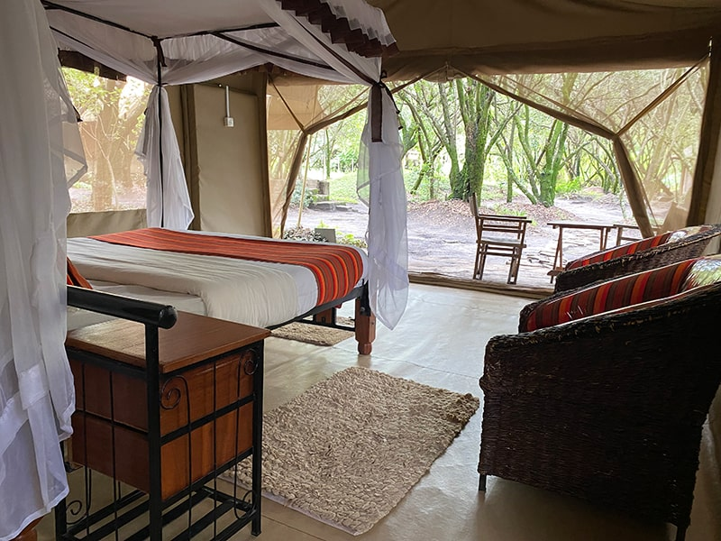

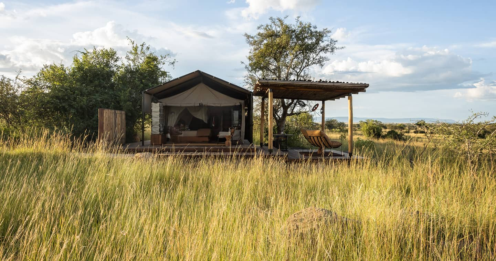
Take breakfast and leave for a full day game drive in Masai Mara National Reserve with picnic lunch. The game reserve is famously known for its annual great migration of wildebeest and zebras from July to October and its large population of African wildlife species. Enjoy game viewing of many different species of wild animals. Late in the evening exit the Kenya game reserve and drive to Maasai village for an optional activity (extra $10 per person) and later back to lodge for dinner, bonfire, and overnight.
The safari experience in Maasai Mara Game Reserve is not complete without another early morning game drive before breakfast to witness the sunrise and track the African wildlife species as they graze and the predators prepare for a hunt. Return to the lodge for a full breakfast, check out and drive to Nakuru arriving in the evening for dinner and overnight.
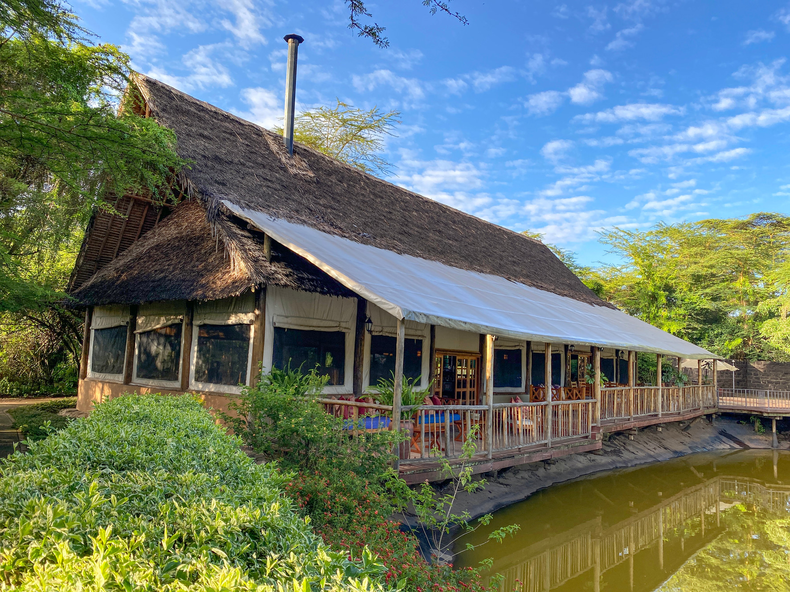
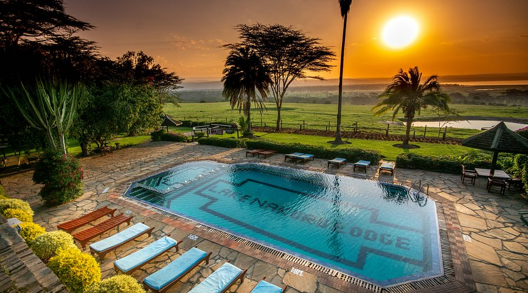
Early breakfast as the guide briefs you about Lake Nakuru National Park, drive to the main gate, and enjoy the African safari tour to see the black and white Rhinoceros, Buffalos, Lions, Leopard, Flamingos, Pelicans, Baboon monkeys, Impalas, Gazelles among other animals and birds that inhabit here. Visit the baboon viewpoint cliff before leaving the park with lunch en route to Naivasha. Arrive at Naivasha in time for optional activities such as boat ride ($20 per person) or visit to Crescent Island ($30-50 per person) paid directly at the spot. Later, return to the lodge for dinner and overnight.
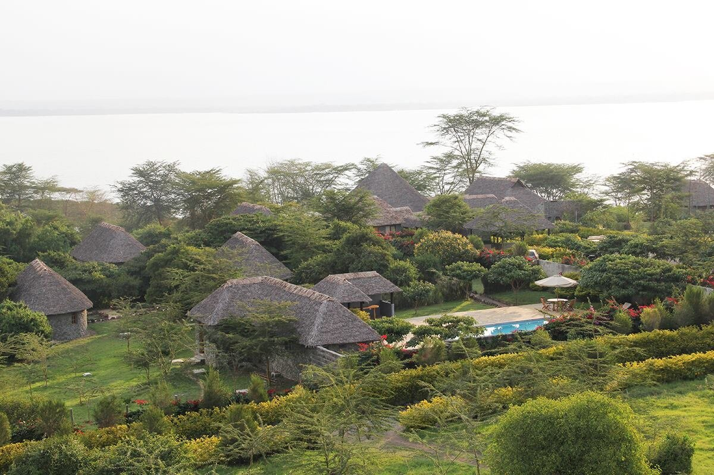
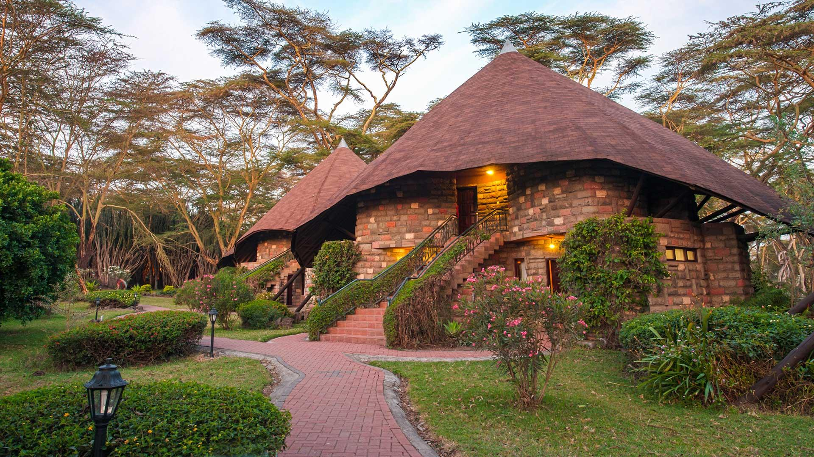
Wake up to early breakfast as you prepare for great activities at Hell's Gate National Park. You can enjoy a safari drive with your guide or decide to hire a bicycle ride ($6-15 per person) on game drives as the driver follows you from the back. Enjoy a guided nature walk before ascending to the main gate, exit, and drive to Amboseli National Park with a stopover for lunch on the main highway before you arrive in Amboseli in time for sunset. Check-in, enjoy dinner, bonfire, and overnight.
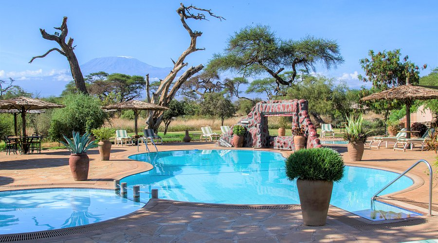


Enjoy your African safari with the majestic Mount Kilimanjaro which is located on the Tanzania side but Amboseli National Park offers a great view of it. Depart for a full day game drive inside the park which is the second most visited in Kenya. Enjoy your picnic lunch inside the park and continue with game drives, transversing various areas of the park including visiting the swampy areas which attract a large number of African wildlife in search of drinking water. The jumbo elephants graze and bathe at the Amboseli National Park swampy area. Exit the Kenya National Park late evening and drive to the lodge for dinner, bonfire, and overnight.
Early morning breakfast, check out with packed picnic lunches for the final safari experience in Amboseli National Park as you transverse from Amboseli Kimana Gate to Amboseli Mashenani gate with at least 2 hours game drive in search of more African wildlife species and birds. Exit Amboseli National Park and drive to the Kenya and Tanzania Namanga border for immigration. The Kenyan driver will hand you over to our Tanzania shuttle bus driver for transfer to Arusha Town. Upon arrival check in to your hotel as you wait for briefing about Tanzania part of safari.
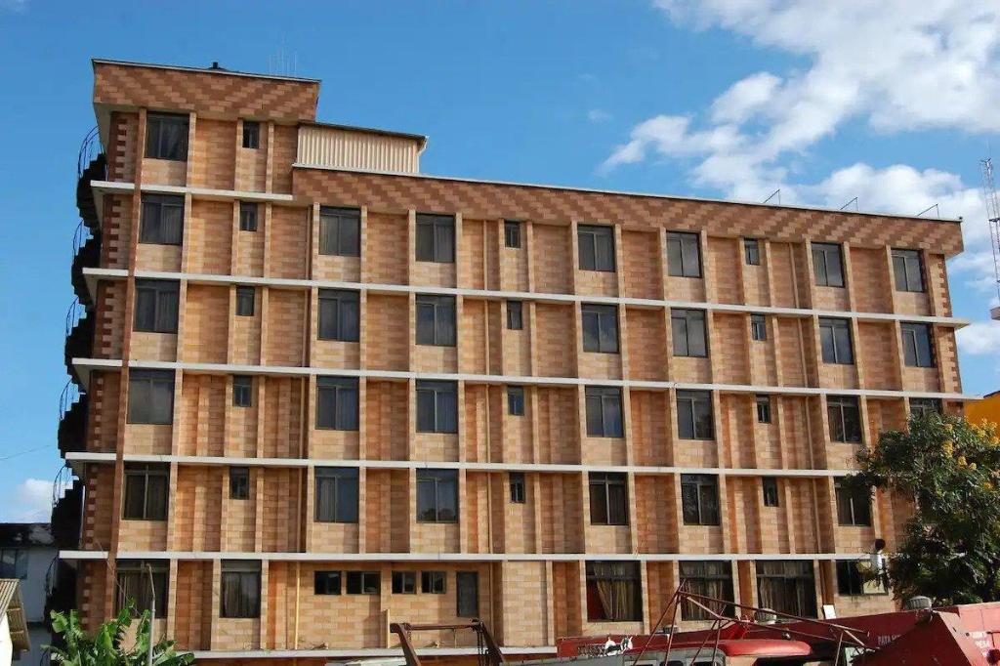

After breakfast you will be picked up and head for a game drive in Tarangire National Park for half a day. Tarangire National Park runs along two rivers that act as a magnet for the attraction of African wildlife species and birds that inhabit here. With great African safari memories of Tarangire National Park experience you will be dropped at your lodge for dinner, bonfire, and overnight.
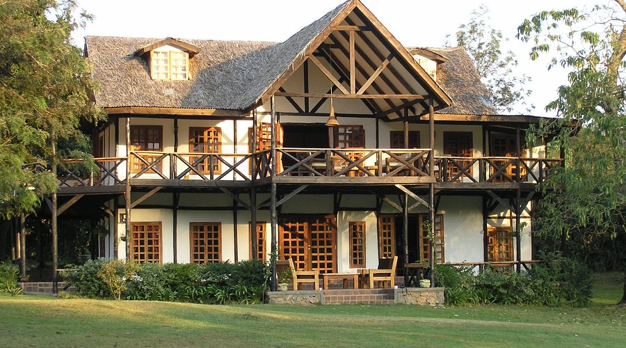

Breakfast at your lodge, collect the picnic lunches and drive to Lake Manyara National Park for half a day game drive. Lake Manyara National Park is famous for its unique sources of water from the underground springs, streams, and rivers, large flocks of pink flamingos and its tree-climbing lions. Lake Manyara National Park will give you a great experience for your Kenya and Tanzania budget lodge safari experience. Exit the park in the evening and drive to lodge for dinner, bonfire, and overnight.
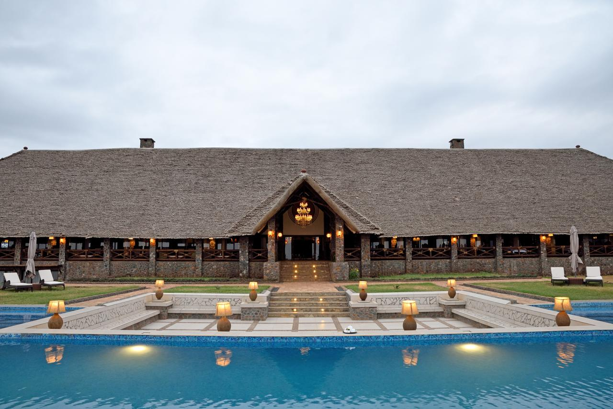
Breakfast at the lodge, check out with packed picnic lunch boxes and drive to Serengeti National Park for the Kenya and Tanzania safari experience. Arrive at Serengeti National Park for registration in the afternoon and enjoy your game drive en route to Central Serengeti, arriving late in the evening for dinner and overnight. Experience the vast plains and incredible wildlife concentrations that make Serengeti world-famous.
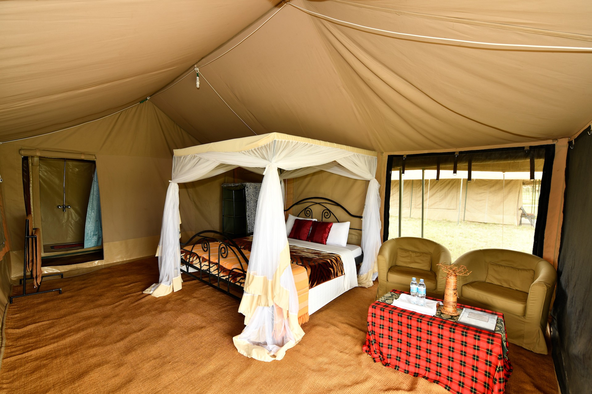
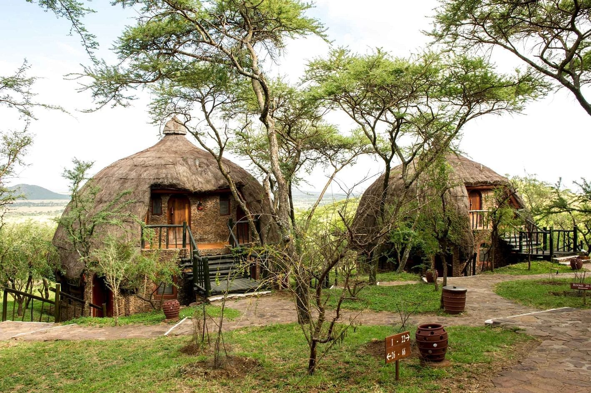
Enjoy a full day exploring the endless plains of Serengeti National Park. Today offers another opportunity to witness the incredible wildlife concentrations, including the Big Five, zebras, giraffes, hippos, cheetahs, and much more. With your expert guide, explore different areas of the park, following animal movements and behaviors. Lunch will be served picnic-style in the park. After a full day of safari, return to your accommodation for dinner and overnight, with the sounds of the African wilderness surrounding you.
Check out after breakfast for the final safari drive in Serengeti National Park up to noon. Exit Serengeti National Park and drive to Ngorongoro Conservation Area with a stopover at Olduvai Gorge for an optional activity ($42 per person). Arrive in the evening for dinner and spend the night at the crater rim, anticipating tomorrow's descent into the crater.


Check out with a picnic lunch box for the last Kenya and Tanzania safari experience in Ngorongoro Crater, which is a UNESCO World Heritage Site and one of the Seven Wonders of the World. Enjoy the game drives down the Crater Rim with a picnic lunch, and ascend to the main gate with amazing views. Exit and drive to Arusha town arriving at the hotel late evening for check-in. Dinner on your own and overnight.
You will be picked up from your hotel at around 7:30 AM for a transfer back to Nairobi by shuttle bus. You will arrive in the afternoon and be dropped at the airport or Nairobi hotel. End of your unforgettable 15-day Kenya Tanzania Safari adventure.
End of Itinerary
Compare prices across different seasons and group sizes for this 15-day cross-border safari
| Number of People | 4x4 Land Cruiser – 15 Days Kenya Tanzania |
|---|---|
| 1 Person | $6,510 |
| 2-3 People | $5,165 |
| 4-5 People | $4,665 |
| 6+ People | $4,500 |
| 1 Person | $6,940 |
| 2-3 People | $5,510 |
| 4-5 People | $4,980 |
| 6+ People | $4,820 |
Experience the wild like never before with our expertly crafted safaris